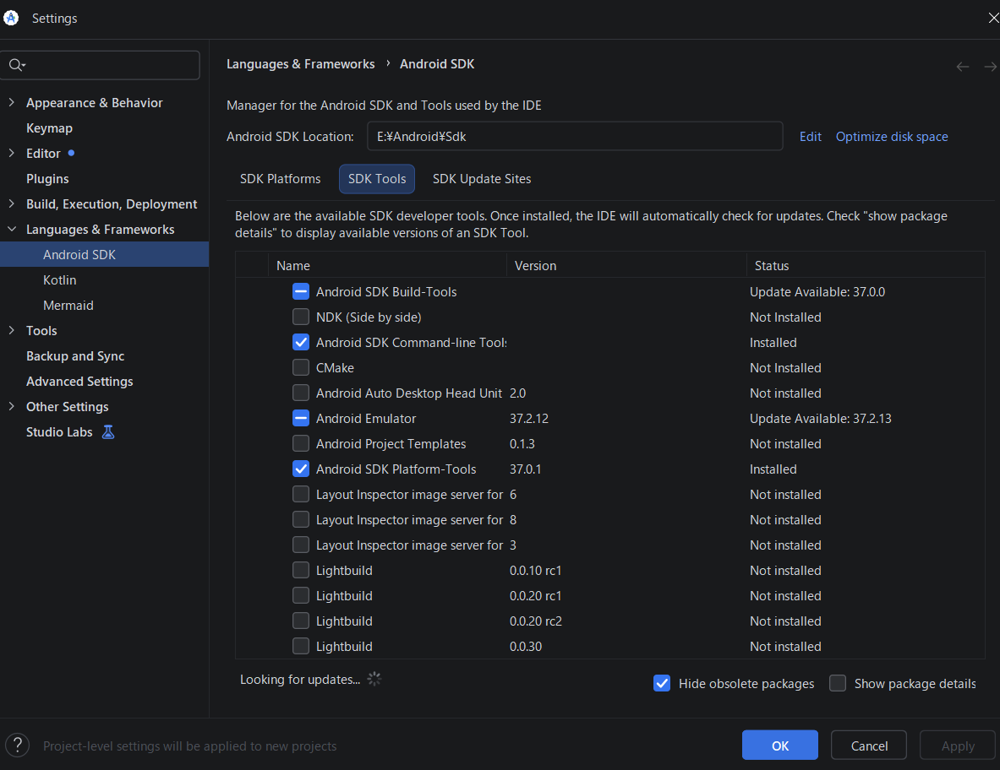
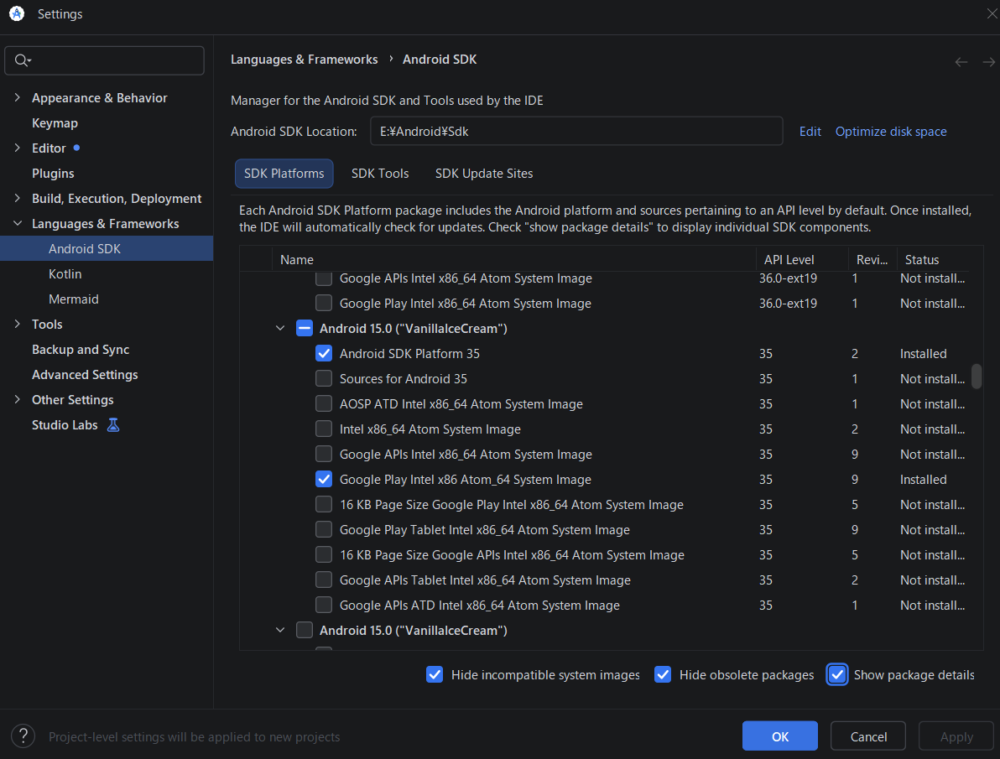

2. Android StudioとAVDを用意する
AVDは、Android端末をWindows上で動かす仮想端末です。リーダーアプリとGoogle Playを使うため、Google Playストア入りのシステムイメージを選びます。
💡 画面寸法や密度は、AVDを作るときに手で合わせる必要はありません。ebook2xtcで出力対象と倍率を選び、アプリからAVDを起動すると設定されます（5章）。
Android StudioとSDKを入れる
- Android Studio公式インストール手順から、Windows版を入手してインストールします。ebook2xtcの「取得」タブ最上部にある「Android環境の準備」→「Android Studioを入手（公式）」からも、同じページを開けます。準備完了後は「導入・再設定を開く」でボタンを再表示できます。初回のSetup Wizardでは「Install Type」に Standard を選びます。SDKのライセンスを確認・受諾し、ダウンロード完了まで待ってください。
- Android StudioのWelcome画面に New Project／Open／Clone Repository が表示されても、どれも選びません。More Actions → SDK Manager を開きます。すでにSettings画面を開いている場合は Languages & Frameworks → Android SDK へ進みます。
- SDK Toolsタブ を開き、画面の Android SDK Build-Tools／Android Emulator／Android SDK Platform-Tools／Android SDK Command-line Tools (latest) の 計4項目にチェック、または青い横棒が付いていることを確認します。Command-line Toolsはebook2xtcでAVDを作成するために必須です。 未導入なら必ずチェックを入れ、Apply を押してライセンスを確認・受諾し、状態が Installed になるまで待ってください。チェックだけが付いていても「Not Installed」の間は導入が完了していません。Build-ToolsはAndroid Studioの標準項目で、ebook2xtcは直接使用しません。Build-ToolsやEmulatorに青い横棒と「Update Available」が表示される場合は、導入済みで更新版があるという意味です。初回セットアップのために更新する必要はありません。

図1：SDK Toolsタブの4項目。Build-ToolsとEmulatorの青い横棒は導入済みで更新版がある状態です。Command-line ToolsとPlatform-Toolsはチェック付きでInstalledです。
✅ ここで使うAndroidのバージョンは「Android 15.0（VanillaIceCream）／API 35」です。 Android Studioで新しいAndroid 16／17が先に表示されても、次の手順ではAndroid 15の行を選んでください。ほかのバージョンが導入済みでも、アンインストールする必要はありません。
- SDK Platformsタブ を開き、一覧の Android 15.0（VanillaIceCream）／API Level 35 を探します。初回導入ではAndroid 15をインストールする操作が必要です。 Android 15の行の左側にある展開矢印をクリックし、右下の Show package details をオンにします。Android SDK Platform 35 と Google Play Intel x86_64 Atom System Image のチェックボックスをクリックしてオンにしてください。Apply（または OK）を押し、確認画面でライセンスに同意して、ダウンロードとインストールが終わるまで待ちます。最後に、この2項目の状態が Installed になったことを確認します。すでに両方ともInstalledの場合だけ、インストール操作を省けます。Google APIs のイメージやAndroid 16／17のイメージでは代用できません。AVDのOSイメージは容量が大きいため、空き容量とネット接続を確認してください。
💡 Android 17の導入は任意です。 初回のインストール画面でAndroid 17に最初からチェックが入っている場合、チェックを残して導入しても、外して導入を省いてもかまいません。残すと将来Android 17のAVDで動作を試せます。外すとダウンロード量とディスク使用量を減らせます。ただし、Installedと表示されている項目のチェックを外すとアンインストールになります。既存のAndroid 17のAVDを使う場合は、その項目を残してください。ebook2xtc用のAndroid 15の上記2項目は必ず導入します。

図2：インストール後、Android 15／API 35の2項目がInstalledになった画面例です。初回は上の手順でAndroid 15の項目をクリックしてインストールしてください。画面例のSDK保存先はE:\Android\Sdkです。
- SDK Manager上部の Android SDK Location を控え、OK で閉じます。ebook2xtcの「取得」タブに戻り、「準備を再確認」を押します。アプリが、SDK・System Image・仮想化の状態を確かめます。
- 仮想化に関する警告が出なければ、Windowsの機能を変更する必要はなく、このためのPC再起動も不要です。
- 警告が出た場合は「後の手順でPCの再起動が必要です」と確認画面が出ます。Windows PC本体の再起動が後で必要になることを了承して準備を続ける場合は OK を押します。キャンセル すると標準環境のセットアップには進みません。Windowsの設定を変えるのは、AVDを初めて起動する前でかまいません。
💡 仮想化の確認だけを早めに済ませたい場合は、手順3でAndroid Emulatorを入れた時点で「準備を再確認」を押してもかまいません。そのときはSystem Imageが未導入と表示されますが、手順4の後に押し直せば解消します。
- 「標準環境をセットアップ」を押します。同じ設定のAVDがすでにある場合は「環境準備済み」と表示され、このボタンは押せません。そのAVDをそのまま使います。詳しくは13章を参照してください。
- 手順5で仮想化の警告が出たPCだけ、AVDの初回起動前に「Windowsの機能を開く」から 「Windows ハイパーバイザー プラットフォーム」 を有効にします。Android Studioに「Enable Windows Hypervisor Platform」と表示された場合は、Enable and Restart Now でも進められます。作業を保存して Windows PC本体を一度再起動し、ebook2xtcの「準備を再確認」を押してください。ebook2xtcやAndroid Studioだけの再起動では反映されません。引き続き仮想化を利用できない場合は、PCのBIOS/UEFIでIntel VT-xまたはAMD SVMが有効か確認します（Android公式の仮想化設定）。
⚠️ 仮想化診断で警告が出ても、実際には起動できる環境があります。③の「起動」を押した際の警告で「このまま起動を試す」を選ぶと、AVDの起動を試行できます。起動できなければ、上記のWindows設定とBIOS/UEFI設定を確認してください。
📦 Command-line Toolsが必要な場面: 「標準環境をセットアップ」と、環境プロファイルの読み込み（13章）では、Command-line Toolsの avdmanager でAVDを作成します。
☕ Javaの設定: v0.2.3以降、ebook2xtcはAVD作成時にAndroid Studio付属のJava（JBR）を自動で探し、Java 17以上であればその実行にだけ使用します。通常はPowerShellでの設定や別のJDKの導入は不要です。Android Studioを標準以外の場所に入れた場合など、Javaが見つからなければ13章の対処を確認してください。
ebook2xtcがSDKを探す場所
ebook2xtcは、ANDROID_HOME または ANDROID_SDK_ROOT、標準のSDKフォルダーなどからSDKを探します。AVDが見つからない場合は、手順5で控えたSDKの場所に、platform-tools\adb.exe と emulator\emulator.exe があることを確認してください。
図1・図2のSDK保存先は一例です。利用者のPCではSDK Managerに表示された実際の場所を使ってください。複数のSDKがある場合、ebook2xtcは同梱JSONが要求する Android 15／Google Play／x86_64 のSystem Imageを持つSDKを優先します。見つからない場合、エラーに確認したSDKの場所が表示されます。Android Studioの Android SDK Location と比べ、異なる場合は取得タブ最上部の「SDK保存先を指定（認識しない場合）」から、Android Studioに表示されたSDKのフォルダーを選んでください。選択先はポータブル版のiniに保存され、次回も使われます。PowerShellでの設定は不要です。
Google Play対応のAVDを作る
🚀 配布版ではAVDの手作業作成を省略できます: ebook2xtcの初回起動時に、EXEと同じフォルダーの環境JSONを自動検出します。必要なSystem Imageを入れ、「取得」タブの「標準環境をセットアップ」を押してください（13章）。この後の手作業でのAVD作成手順は不要です。日本語化とリーダーアプリの準備（3章）はセットアップ後も必要です。
- Android StudioのWelcome画面から「More Actions」→「Virtual Device Manager」を開きます。プロジェクトを開いている場合は、「View」→「Tool Windows」→「Device Manager」から開けます。
- 「Create Device」を押し、Phoneカテゴリから電話型のハードウェアプロファイルを選びます。特定のPixel機種を完全に再現する必要はありません。
- System Imageの一覧で Android 15.0／API 35 の行を明示的に選びます。Android 16／17が初期選択されていたらAndroid 15へ切り替えてください。Google Playのアイコンまたは表示が付いたイメージを選び、「Download」→「Next」へ進みます。Google APIsだけのイメージには、Playストアが入らない場合があります。
- AVD名を付けます（例：
S4Capture_API35_Play）。初期画面の解像度とDPIは既定値のままでかまいません。
- 「Show Advanced Settings」を開き、「Keyboard」→「Enable Keyboard Input（キーボード入力を有効にする）」を有効にします。PCのキーボードでGoogle／リーダーアプリのログイン欄へ入力するときに使います（4章）。設定を確認して「Finish」を押します。
- 仮想化の警告が出ている場合は、上の手順7を済ませます。警告がなければPC再起動は不要です。Device Managerで、作成したAVDを一度起動します。初回の起動には時間がかかることがあります。Androidの初期画面が出たら、セットアップを完了してください。
AVDの作成手順は、Android DevelopersのAVDガイドも参照してください。